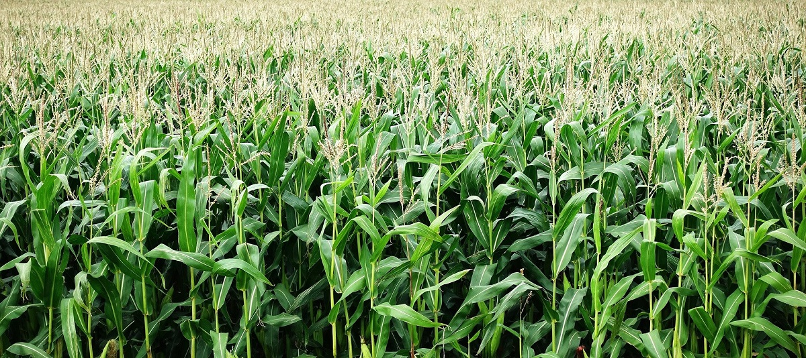

El maíz es un alimento fundamental y un símbolo cultural importante en Guatemala. Es un cultivo nativo que ha sido cultivado por los pueblos indígenas de la región durante siglos y ha sido fundamental en la dieta, la economía y la cultura guatemalteca.
La importancia cultural del maíz en Guatemala también se refleja en la mitología y las leyendas del país, en las que el maíz es considerado una divinidad y un regalo sagrado de los dioses.
La siembra del maíz es una práctica milenaria del pueblo Maya, caracterizada por las actividades ceremoniales que se realizan antes, durante y después de sembrar. El maíz es uno de los cultivos más antiguos de los pueblos ancestrales, además del amaranto, el cacao, el frijol, la calabaza y la yuca.
Para la cultura Maya, el maíz es un elemento importante, porque según el Popol Vuh las personas fueron hechas de maíz, además son cuatro los colores principales: rojo, blanco, amarillo y negro, su combinación produce también mazorcas con granos multicolores.
Dentro de la cosmovisión maya, el maíz representa lo espiritual, la agricultura, el calendario, la mitología y el origen de la vida, ya que se considera que fue la materia prima con la que el hombre fue creado.
En muchos idiomas mayas se refieren a este grano básico como “Ixim”, asimismo, en comunidades de Huehuetenango se le guarda reverencia como una deidad, que puede ser masculino en el caso del municipio de Santiago Chimaltenango, en donde se le conoce como “Padre Paxil”; o femenina como en el municipio de Colotenango, en donde se le refiere como “Ktxu”, que significa nuestra madre en mam.
Según la cosmovisión maya, a través del Popol Vuh, libro sagrado de los Quichés, el maíz se originó en un lugar llamado Paxil, que en la actualidad y también a través de la tradición oral mam, se encuentra entre los municipios de Ixtahuacán y Colotenango.
Para el pueblo Q’eqchi’ la siembra del maíz es un evento sagrado. Ese momento se prepara con un mes de anticipación desde el líder de la comunidad. La familia y los colaboradores deben estar en abstinencia y comienza una etapa de reflexión, los hijos deben respetar el momento, no se puede hacer cualquier cosa y las personas no pueden enojarse.
La siembra del maíz cuenta con su propio proceso, desde la roza, la selección de semillas, la siembra simbólica, la siembra y el convivio. La selección de las semillas se hace un mes antes del evento sagrado; se quema una candela por la mañana y una al medio día. La selección no la puede hacer cualquiera, no pueden ser los niños, debe ser una persona adulta o un abuelo, o los dueños de la siembra. Al momento de desgranar la semilla los niños solo pueden observar, como un aprendizaje.
La siembra se debe llevar a cabo cuando la luna está llena, para que las semillas no sean consumidas por los animales y salgan mazorcas grandes. Es una actividad de la comunidad, en la que participan los abuelos, la niñez, la juventud y las mujeres, que preparan el sagrado alimento en la casa.
La siembra tiene sus propias normas o reglas, su lenguaje, las palabras que se utilizan, son específicamente para la siembra. Se utiliza un palo que sirve para abrir el surco donde se colocan las semillas, la cantidad de granos depende de la distancia de cada mata.
Al finalizar la siembra se comparten los alimentos entre todas las personas que colaboraron; puede ser un caldo de gallina o de chunto, se comparte porque para la cultura Maya Q’eqchi’ no existe la avaricia se comparte para que haya alimento en abundancia para el pueblo y no escasee. Es el significado del trabajo colectivo, el amor y el vivir bien.
El Decreto 13-2014 establece que el objetivo de la ley fue declarar el maíz como Patrimonio Cultural Intangible de la Nación, pues es uno de los símbolos más valiosos arraigados de la naturaleza y cultura guatemalteca.
La normativa valorar todas las razas y sub razas de maíz, variedades y tipos autóctonos propios, distintivos, originarios o peculiares de los suelos y climas de Guatemala, resultantes de procesos de mejoramiento genético a través de prácticas tradicionales transmitidas degeneración en generación, junto con las tradiciones de sus usos y sabores, incluyendo los productos derivados del maíz, procesados o no, de forma artesanal.
El 13 de agosto de cada año en todo el territorio nacional se debe desarrollar todo tipo de celebraciones que tiendan a realzar la naturaleza e importancia de este grano, como parte fundamental en la vida de todos los guatemaltecos.
Los Artículos 4 y 5 de la Ley instan al Organismo Ejecutivo para que, a través de sus ministerios, establezcan programas, estrategias y un presupuesto necesario para fomentar y divulgar la producción del maíz, debido a su importancia ligada a la seguridad alimentaria nacional.